공조냉동기계산업기사 (2008-03-02 기출문제)
1과목: 공기조화
1. 다음 중 전공기 방식의 특징에 관한 설명으로 옳지 않은 것은?
- 송풍량이 충분하므로 실내공기의 오염이 적다.
- 리턴홴을 설치하면 외기냉방이 가능하게 된다.
- 실내에는 취출구와 흡입구를 설치하면 되고 홴코일 유닛과 같은 기구가 노출되지 않는다.
- 큰 부하의 실에 대해서도 덕트가 작게 되고 스페이스가 적다.
(정답률: 88%)

2. 다음 용어 중에서 습공기선도와 관계가 없는 것은?
- 비체적
- 열용량
- 노점온도
- 엔탈피
(정답률: 66%)
3. 다음은 냉각 코일에서 공기상태변화를 나타낸 것이다. 이때 코일의 BF(BYPASS FACTOR)는 어느 것인가?
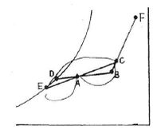
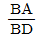
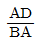
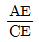
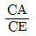
(정답률: 76%)
4. 크기가 15m×5m, 천정고가 2.4m인 어느 실의 틈새 바람에 의한 전열부하(kcal/h)는 약 얼마인가?
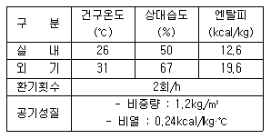
- 2000
- 3000
- 4000
- 5000
(정답률: 53%)
5. 스테인리스 강판에 리브형 홈을 만들어 합성고무의 가스켓으로 수밀(水密)을 기하여, 초고층 건물의 수-수열교환기로 많이 사용하는 열교환기는?
- 원통다관형
- 열싸이폰형
- 스파이럴형
- 플레이트형
(정답률: 49%)
6. 다음은 송풍기 번호에 의한 송풍기 크기를 나타내는 식이다. 옳은 것은?
- 원심송풍기 : No(#)=
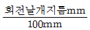
, 축류송풍기 No(#)=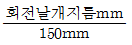
- 원심송풍기 : No(#)=
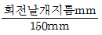
, 축류송풍기 No(#)=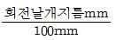
- 원심송풍기 : No(#)=
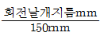
, 축류송풍기 No(#)=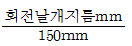
- 원심송풍기 : No(#)=
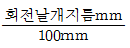
, 축류송풍기 No(#)=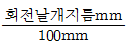
(정답률: 74%)
7. 40W 짜리 형광등 10개를 조명용으로 사용하는 어떤 사무실이 있다. 이 때 조명기구로 부터의 취득 열량은 약 얼마인가? (단, 안정기의 부하는 20%로 한다.)
- 68kcal/h
- 210kcal/h
- 413kcal/h
- 625kcal/h
(정답률: 62%)
8. 공기 조화기에 관한 다음의 설명 중 부적당한 것은?
- 패케지형 에어컨디셔너는 압축기, 팬 및 코일 등을 내장하고 있다.
- 유니트 히터는 냉동기 및 코일 등을 내장하고 있다.
- 에어 핸들링 유니트는 팬 및 코일 등을 내장하고 있다.
- 팬 코일 유니트는 팬과 코일 등을 내장하고 있다.
(정답률: 62%)
9. 다음은 냉각 코일에 관한 사항이다. 옳은 것은?
- 대수 평균 온도차(MTD)를 크기하면 코일의 열수가 많아져 불리하다.
- 냉수의 속도는 2m/s 이상으로 하는 것이 바람직하다.
- 코일을 통과하는 풍속은 2-3m/s가 경제적이다.
- 코일 온도 상승은 일반적으로 10℃ 전후로 한다.
(정답률: 83%)
10. 다음 중 복사난방의 특징이 아닌 것은?
- 낮은 온도에서도 쾌적성이 높다.
- 실내 온도가 균일하다.
- 설비비가 많이 든다.
- 간헐난방에 적합하다.
(정답률: 76%)
11. 다음 중 공기의 가습방법으로 맞지 않는 것은?
- 에어워셔에 의해서 단열가습을 하는 방법
- 얼음을 분무하는 방법
- 증기를 분무하는 방법
- 가습팬에 의해 수증기를 사용하는 방법
(정답률: 86%)
12. 환기방식 중에서 송풍기를 이용하여 실내에 공기를 공급하고, 배기구나 건축물의 틈새를 통하여 자연적으로 배기하는 방법은?
- 제1종 환기
- 제2종 환기
- 제3종 환기
- 제4종 환기
(정답률: 68%)
13. 다음과 같은 벽체의 열관류율 K값은 몇 kcal/m2h℃ 인가?
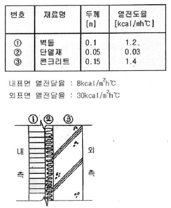
- 0.248
- 0.363
- 0.496
- 0.521
(정답률: 55%)
14. 다음 공조방식 중 팬, 펌프 등 동력비가 가장 큰 것은?
- FC 유니트 방식(덕트병용)
- 멀티존 방식
- 유인 유니트 방식
- 패케지 방식
(정답률: 54%)
15. 다음 중 저속덕트의 설계 방법과 거리가 먼 것은?
- 일반적으로 등압법으로 설계한다.
- 일반적으로 주덕트의 풍속을 20m/s~30m/s로 설계한다.
- 가장 저항이 큰 경로(주경로)에 대해서 압력손실을 같은 값으로 설계한다.
- 일반적으로 풍량이 10000m3/h이상인 부분을 풍속으로 그 이하의 부분을 압력??? 설계한다.
(정답률: 63%)
16. 다음 중 공급방식에 이한 분류에 해당되는 증기난방 방식은?
- 고압식 증기난방 방식
- 하향 급기식 증기난방 방식
- 중력식 증기난방 방식
- 습식 증기난방 방식
(정답률: 55%)
17. 공조용 열원시스템에서 토탈에너지방식에 사용하는 구동기관으로 맞지 않는 것은?
- 전동기
- 가스엔진
- 디젤엔진
- 가스터어빈
(정답률: 57%)
18. 보일러에서 이코노마이저(절탄기)의 기능은?
- 급수 예열
- 연료 가열
- 급기 예열
- 증기 가열
(정답률: 65%)
19. 다음 중 냉난방시 인체에 적당한 공기의 속도는?(오류 신고가 접수된 문제입니다. 반드시 정답과 해설을 확인하시기 바랍니다.)
- 냉방 : 0.10 ~ 0.25m/sec 난방 : 0.13 ~ 0.18m/sec
- 냉방 : 1.12 ~ 1.18m/sec 난방 : 1.18 ~ 1.25m/sec
- 냉방 : 0.10 ~ 0.25m/min 난방 : 0.13 ~ 0.18m/min
- 냉방 : 1.12 ~ 1.18m/min 난방 : 1.18 ~ 1.25m/min
(정답률: 56%)
20. 다음 중 방열기기의 종류가 아닌 것은?
- 주철제 방열기
- 강판제 방열기
- 컨벡터
- 직화 방열기
(정답률: 44%)
2과목: 냉동공학
21. 전자 누설탐지기는 냉매가 새는 경우 어떤 반응을 보이는가?
- 불꽃의 색깔이 변한다.
- 눈금을 나타내거나 빛 또는 소리가 난다.
- 관에 있는 색깔이 변한다.
- 바이메탈을 이용하여 굽어지는 정도로써 눈금을 나타낸다.
(정답률: 75%)
22. 다음 중 브라인의 구비조건이 아닌 것은?
- 열 용량이 작고 전열이 좋을 것
- 점도가 적당할 것
- 응고점이 낮을 것
- 금속에 대한 부식성이 적고 불연성일 것
(정답률: 70%)
23. 다음은 프레온 장치에서 유분리기를 사용해야 될 경우의 설명이다. 옳지 않는 것은?
- 만액식 증발기를 사용하는 경우에 사용한다.
- 다량의 기름이 토출가스에 혼입될 때 사용한다.
- 증발온도가 높은 경우에 사용한다.
- 토출가스 배관이 길어지는 경우에 사용한다.
(정답률: 59%)
24. -20℃의 암모니아 포화액의 엔탈피가 78kcal/kg이며 동일온도에서 건조포화증기의 엔탈피가 395kcal/kg 이다. 이 냉매액이 팽창밸브를 통과하여 증발기에 유입될 때의 냉매의 엔탈피가 125kcal/kg 이었다면 중량비로 약 몇 % 가 액체상태인가?
- 95%
- 85%
- 35%
- 15%
(정답률: 63%)
25. 다음은 제어기기와 안전장치에 대한 설명이다. 옳은 것은 어느 것인가?
- 유압보호 스위치는 유압계의 지기사 일정압력보다 내려 갔을때 압축기가 작동하도록 조정한다.
- 압축기에 안전밸브와 고압차단 장치를 설치했을 때 안전밸브의 작동압력은 고압차단 장치의 작동압력보다 높게 조정하는 것이 좋다.
- 압축기의 토출압력이 올라가면 전동기의 부하도 커짐으로 전동기의 과부하차단장치(오바로드 릴레이)가 있으면 냉매계통의 안전장치는 없어도 된다.
- 절수밸브는 증발압력을 검지하여 냉각수량을 가감하는 조정밸브이므로 안전장치로 간주한다.
(정답률: 68%)
26. 다음의 모리엘 선도는 어떤 냉동장치를 나타낸 것인가?
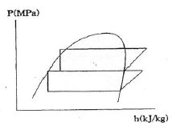
- 1단압축 1단팽창 냉동시스템
- 1단압축 2단팽창 냉동시스템
- 2단압축 1단팽창 냉동시스템
- 2단압축 2단팽창 냉동시스템
(정답률: 85%)
27. 다음 입형 셸 엔드 튜브식 응축기의 설명으로 맞는 것은?
- 설치 면적이 큰데 비해 용량이 적다.
- 냉각수 소비량이 비교적 적고 설치장소가 부족한 경우에 설치 한다.
- 냉각수의 배분이 불균등하고 유량을 많이 함유 하므로 과부하를 처리 할 수 없다.
- 설치면적이 작고 운전 중에도 냉각간 청소가 용이하다.
(정답률: 57%)
28. R12 열교환기에서 고압액과 저압증기가 병류로 흐르고 있을 때 고압액은 입구에서 80℃, 출구에서 6.5℃이고 저압증기는 입구에서 -20℃, 출구에서 -13.5℃가 된다면 이때 대수 평균 온도차는 얼마인가?
- -16.7℃
- 13.2℃
- 49.7℃
- 60℃
(정답률: 49%)
29. 다음은 압축기의 구조에 대해 설명한 것이다. 틀린 것은?
- 반 밀폐형은 고정식이므로 분해가 곤란한다.
- 개방형에는 벨트 구동식과 직결 구동식이 있다.
- 밀폐형은 전동기와 압축기가 한 하우징 속에 있다.
- 기통 배경에 따라 입형, 횡형, 다기통형으로 구분된다.
(정답률: 76%)
30. 다음은 흡수식 냉동장치에 관한 설명이다. 옳지 않은 것은 어느 것인가?
- 흡수식 냉동기에서는 증기압축식 냉동기에서의 압축기 역할을 흡수기와 발생기가 대신하고 있다.
- 흡수식 냉동기는 가열원으로 천연가스, LPG 등을 사용할 수 있으나 효율이 나쁘므로 고온의 폐열을 얻을 수 있는 곳에 적합하다.
- 흡수식 냉동기의 냉매로는 LIBR, 흡수제로서는 물로 사용하는 흡수식 냉동기가 현재 많이 사용되고 있다.
- 흡수식 냉동기는 용량제어의 범위가 넓어 폭 넓은 용량제어가 가능하다.
(정답률: 53%)
31. 30℃의 원수 5ton을 3시간에 2℃까지 냉각하는 수 냉각 장치의 냉동 능력은 얼마인가?
- 8RT
- 11RT
- 14RT
- 26RT
(정답률: 60%)
32. 제빙 장치에서 브라인의 온도가 -10℃이고, 얼음 두께가 20cm인 관빙의 결빙 소요시간은?
- 24.4시간
- 22.4시간
- 20.4시간
- 18.4시간
(정답률: 67%)
33. 히트 파이프의 특징을 설명한 것으로 틀린 것은?
- 등온성이 풍부하고 온도상승이 빠르다.
- 사용온도 영역에 제하니 없음 압력손실이 크다.
- 국부 부하의 변동이 강하고 열 유속이 변동이 가능하다.
- 적은 온도차에서 장거리 열수송이 가능하다.
(정답률: 65%)
34. 다음 설명 중 옳은 것은?
- 냉동능력을 크게 할려면 압축비를 높게 운전하여야 한다.
- 팽창밸브 통과 전후의 냉매 엔탈피는 변하지 않는다
- 암모니아 압축기용 냉동유는 암모니아보다 가볍다.
- 암모니아는 수분이 있어도 아연을 침식시키지 않는다.
(정답률: 68%)
35. 증발기에서 나오는 냉매가스의 과열도를 일정하게 조정하는 밸브는?
- 모세관
- 정압식 팽창밸브
- 온도식 자동팽창 밸브
- 플로트형 밸브
(정답률: 71%)
36. 냉각관 상부에 피냉각액의 저장조를 설치하여 피냉각액을 작은 구멍을 통해 흘러내리게 하면 피냉각액이 냉각관 외벽에 막상을 이루며 냉매와 열교환을 하는 증발기는?
- 냉배살포식 증발기
- 원통코일형 증발기
- 보델로 증발기
- 이중관식 증발기
(정답률: 66%)
37. 다음 열역학에 이용되고 있는 식 중 잘못된 것은? (단, q:열량 Cv:정적비열 Cp:정압비열 u:내부에너지 h:엔탈피 T:절대온도 v:비체적 A:일의 열당량 p:압력)(오류 신고가 접수된 문제입니다. 반드시 정답과 해설을 확인하시기 바랍니다.)
- ⊿h=Cv(T2-T1)
- ⊿h=Cp(T2-T1)
- δq=δu+Apδv
- δh=δq+Apδv
(정답률: 45%)
38. 냉동사이클에서 등엔탈피 과정이 이루어지는 곳은?
- 압축기
- 증발기
- 수액기
- 팽창밸브
(정답률: 65%)
39. 다음 압력 중 크기가 다른 것은?
- 9806.65 Pa
- 0.1 kgf/cm2
- 1.42233 lbf/in2
- 0.967841 atm
(정답률: 44%)
40. 항공기 재료의 내한(耐寒)성능을 시험하기 위한 냉동장치를 설치 하려고 한다. 가장 적합한 냉동기는?
- 왕복형 압축식 냉동기
- 원심 압축식 냉동기
- 축류 압축식 냉동기
- 흡수식 냉동기
(정답률: 69%)
3과목: 배관일반
41. 중앙식 급탕법인 간접가열식에 대한 설명 중 옳지 않은 것은?
- 고압 보일러가 불필요하다.
- 소규모 주택에 적합하다.
- 저탕조 내에 가열코일을 설치하여 가열하는 방식이다.
- 보일러 내에 스케일이 잘 끼지 않으며 전열효율이 크다.
(정답률: 50%)
42. 보온재의 구비조건이 아닌 것은?
- 열전도도가 작고 방습성이 클 것
- 인화성이 우수할 것
- 내압강도가 클 것
- 사용온도 범위가 클 것
(정답률: 66%)
43. 배관이음에 있어서 나사이음에 비하여 용접이음의 이점이 아닌 것은?
- 이음부의 강도가 크고 누설의 우려가 적다.
- 이음부위의 관두께가 일정하여 유체의 저항손실이 적다.
- 이음시간이 단축되며, 이음 재료비가 절약된다.
- 돌기부는 없지만 배관상의 공간효율이 나쁘고 중량도 무겁다.
(정답률: 75%)
44. 배관 관련설비의 공기조화 설비와 거리가 먼 것은?
- 냉동기 설비
- 보일러 실내기기 설비
- 위생기구 설비
- 송풍기, 공조기 설비
(정답률: 76%)
45. 다음 냉매 배관 중 액관은?
- 압축기와 응축기까지의 배관
- 증발기와 압축기까지의 배관
- 응축기와 수액기까지의 배관
- 팽창밸브와 압축기까지의 배관
(정답률: 74%)
46. 압력 수조식 급수법의 설명으로 옳지 않은 것은?
- 공기 압축기를 설치하여 공기를 보급해야 한다.
- 펌프는 고가 수조에 비하여 양정이 낮다.
- 탱크의 설치위치에 제한을 받지 않는다.
- 최고, 최저의 압력차가 크고 급수압이 일정하지 않다.
(정답률: 36%)
47. 증기난방 배관 방법에 있어서 리프트 피팅(lift fittung)의 빨아 올리는 높이는 1단을 몇 m 이내로 하는가?
- 0.7m
- 1m
- 1.5m
- 3m
(정답률: 69%)
48. 수도 직결식 급수배관의 수압시험 기준압력은 얼마인가?
- 0.2MPa
- 0.74MPa
- 1.35MPa
- 1.72MPa
(정답률: 30%)
49. 배관장치의 도중에 설치하는 기구들의 설명으로 맞는 것은?
- 스트레이너는 유체의 유동방향을 따라갈 때 트랩 다음에 설치한다.
- 저압트랩의 설치시에는 바이패스(bypass)배관이 필요하다.
- 감압밸브의 설치시에는 바이패스(bypass)배관이 불필요하다.
- 증기트랩의 설치장소는 증기공급이 시작되는 위치이다.
(정답률: 46%)
50. 배수 트랩 중 관 트랩의 종류가 아닌 것은?
- P형 트랩
- V형 트랩
- S형 트랩
- U형 트랩
(정답률: 75%)
51. 관경 25A(내경 27.6mm)의 강관에 매분 30ℓ/min의 가스를 흐르게 할 때 유속은 약 얼마인가?
- 0.14 m/s
- 0.34 m/s
- 0.64 m/s
- 0.84 m/s
(정답률: 33%)
52. 트랩 위어(weir)로부터 통기관까지의 구배로서 적당한 것은?
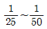
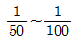
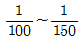
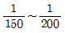
(정답률: 58%)
53. 온수난방할 수 있는 온수를 증기의 열을 이용해서 생산하는 장치는?
- 스트로지 탱크
- 열교환기
- 증발탱크
- 팽챙탱크
(정답률: 49%)
54. 냉장설비의 단열방식에 있어서 내부 단열방식이 적합치 않은 곳은?
- 사용조건이 서로 다른 냉장실이 필요한 냉장실
- 단층 건물 또는 저 층수 냉장실
- 층별로 구획된 냉장실
- 각? ??? 구조체로 구획되고 구조체의 안쪽에 맞추어 단열 시공되는 냉장실
(정답률: 66%)
55. 배관의 지지 간격 결정조건에 포함되지 않는 사항은?
- 관경의 대소
- 수압시험 압력
- 보온 및 보냉의 유무
- 유체의 흐름에 따른 진동
(정답률: 33%)
56. 사용압력은 4kg/cm2 정도 이하이며, 공기 가열기, 열교환기 등 다량이 응축수를 처리하는데 적합한 증기트랩은?
- 플로우트 트랩
- 열동식 트랩
- U 트랩
- 버켓 트랩
(정답률: 49%)
57. 배관계의 계기표시 방법 중 온도 지시계를 나타낸 것은?
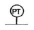
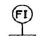
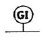
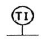
(정답률: 74%)
58. 배관재료 선정시 고려할 사항이 아닌 것은?
- 관속을 흐르는 유체의 화학적 성질
- 관속을 흐르는 유체의 온도
- 관의 이음방법
- 관의 압축성
(정답률: 69%)
59. F.C.U.의 배관 방식 중 냉수 및 온수관이 각각 설치되어 냉온수의 혼합손실이 없는 배관 방식은?
- 단관식
- 2관식
- 3관식
- 4관식
(정답률: 68%)
60. 기밀성, 수밀성이 뛰어나고 견고한 배관 접속 방법은?
- 플랜지접합
- 나사접합
- 소켓접합
- 용접접합
(정답률: 78%)
4과목: 전기제어공학
61. 다음 그림의 논리회로는?
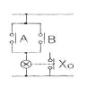
- AND 회로
- OR 회로
- NOT 회로
- NOR 회로
(정답률: 43%)
62. 타이머의 타임차트가 그림과 같을 때 접점기호로 가장 알맞은 것은?
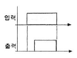
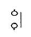
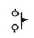
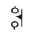
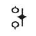
(정답률: 63%)
63. 그림과 같은 회로에서 I1및 I2는 몇 [A] 인가?
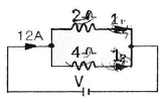
- I1=8A, I2=4A
- I1=4A, I2=8A
- I1=7A, I2=5A
- I1=5A, I2=7A
(정답률: 53%)
64. 그림은 전동기 속도제어의 한 방법이다. 전동기가 최대 출력을 낼 때 사이리스터의 점호각은 몇 [rad]이 되는가?
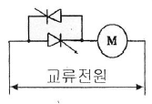
- 0
- π/6
- π/2
- π
(정답률: 66%)
65. 그림과 같은 블록선도와 등가인 것은?
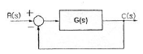
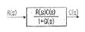
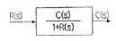
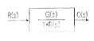
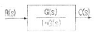
(정답률: 65%)
66. 그림과 같이 실린더의 한쪽으로 단위시간에 유입하는 유체의 유량을 x(t)라 하고 피스톤의 움직임을 y(t)로 한다. t시간이 경과한 후의 전달함수를 구해보면 어떤 요소가 되는가?
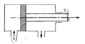
- 비례요소
- 미분요소
- 적분요소
- 미적분요소
(정답률: 54%)
67. R-L-C 직렬회로에서 전류가 최대로 되는 조건은?
- ⍵L=⍵C
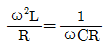
- ⍵LC=1
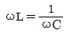
(정답률: 66%)
68. 논리식
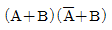
와 등가인 것은?- A
- B
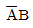
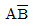
(정답률: 51%)
69. 회전자가 슬립 S 로 회전하고 있을 때 고정자 및 회전자의 실효 권수비를 α라 하면, 고정가 기전력 E1과 회전자 기전력 E2와의 비는 어떻게 표현되는가?
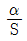
- Sα
- (1-S)α
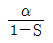
(정답률: 56%)
70. 제어기기의 대표적인 것으로는 검출기, 변환기, 증폭기, 조작기기를 들 수 있는데 서보모터는 어디에 속하는가?
- 검출기
- 변환기
- 증폭기
- 조작기기
(정답률: 79%)
71. 유도전동기의 1차 접속을 △에서 Y로 바꾸면 기동기의 1차 전류는 어떻게 변화하는가?
- 1/3로 감소
- 1/√3로 감소
- √3배로 증가
- 3배로 증가
(정답률: 50%)
72. 그림과 같은 신호 흐름 선도에서 C/R를 구하면?
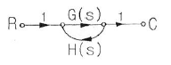
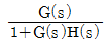
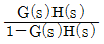
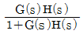
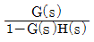
(정답률: 59%)
73. 8Ω, 12Ω, 20Ω, 30Ω의 4개 저항을 병렬로 접속 할 때 합성저항은 약 몇 [Ω]인가?
- 2.0Ω
- 2.35Ω
- 3.43Ω
- 70Ω
(정답률: 61%)
74. 그림과 같은 직병렬회로에 180V를 가하면 3μF의 콘덴서에 축적된 에너지는 약 몇 [J] 인가?
- 0.01J
- 0.02J
- 0.03J
- 0.04J
(정답률: 41%)
75. 유도전동기의 속도제어에 사용할 수 없는 전력 변환기는?
- 인버터
- 사이클로컨버터
- 위상제어기
- 정류기
(정답률: 63%)
76. 단일 궤환 제어계의 개루프 전달함수 일 때, 입력 r(t)=5u(t)에 대한 정상상태 오차 ess는?
- 1/3
- 2/3
- 4/3
- 5/3
(정답률: 43%)
77. 직류 발전기의 철심을 규소강판으로 성층하여 사용하는 이유로 가장 알맞은 것은?
- 브러시에서의 불꽃 방지 및 정류 개선
- 맴돌이 전류손과 히스테리시스손의 감소
- 전기자 반작용의 감소
- 기계적으로 튼튼함
(정답률: 64%)
78. 피드백제어의 전달함수가 일 때 의 값을 구하면?
- 0
- 3
- 3/2
- ∞
(정답률: 51%)
79. 커피 자동 판매기에 동전을 넣으면 일정량의 커피가 나오도록 되어 있는데 다음 중 어느 제엉 해당하는가?
- 프로세스제어
- 피드백제어
- 시퀀스제어
- 비율제어
(정답률: 64%)
80. CNC 공작기계의 프로그램제어에 많이 이용되는 제어는?
- 수치제어
- 속도제어
- 계산기제어
- 최적제어
(정답률: 72%)
이유는 전공기 방식은 덕트를 이용하여 공기를 이동시키기 때문에, 공기의 이동 거리가 짧아지고 덕트의 크기가 작아질수록 스페이스가 적어지기 때문이다. 따라서 큰 부하의 실에 대해서도 덕트를 작게 설치할 수 있어 공간 활용이 용이하다는 장점이 있다.